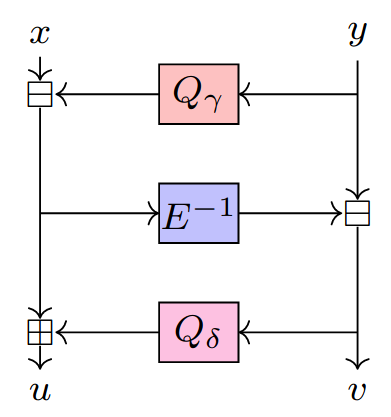
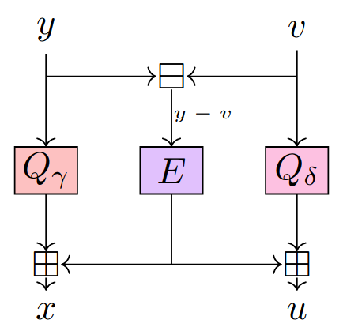
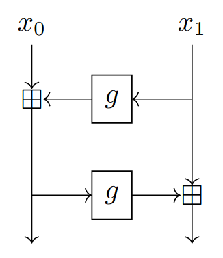
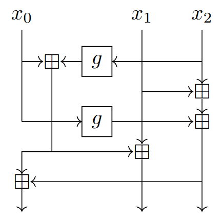
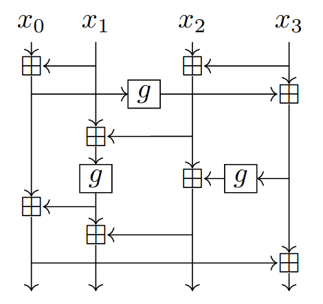
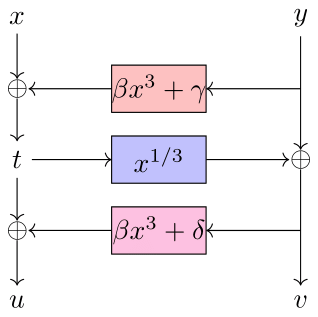
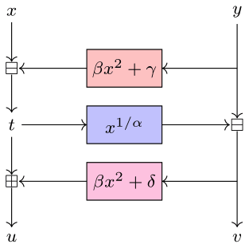
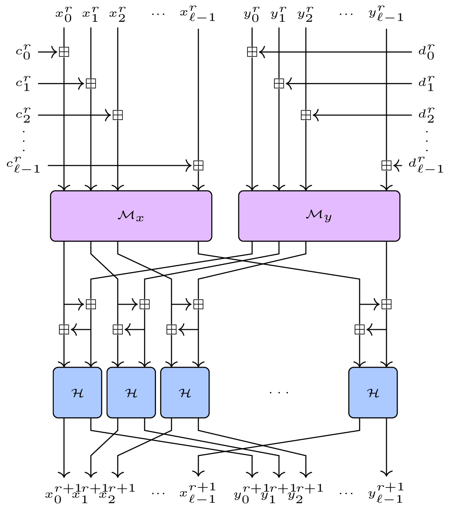
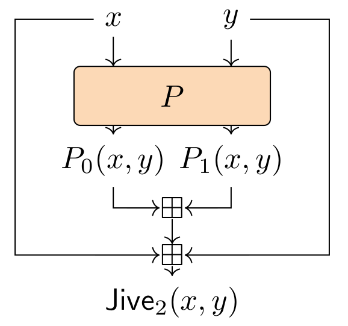
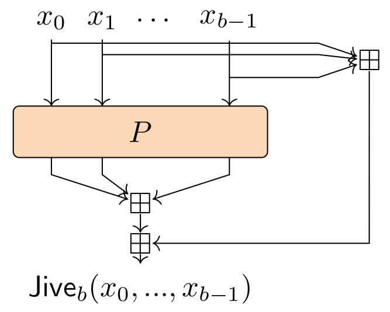

Advanced cryptographic protocols such as
Zero-knowledge (ZK) proofs of knowledge, widely used in cryptocurrency
applications such as Zcash, Monero, Filecoin, demand new cryptographic
hash functions that are efficient not only over the binary
field $\mathbb{F}_{2}$, but
also over large fields of prime characteristic
$\mathbb{F}_{p}$. This need has been
acknowledged by the wider community and new so-called
Arithmetization-Oriented (AO) hash functions have been proposed,
e.g. MiMC-Hash, Rescue–Prime, Poseidon, Reinforced Concrete and Griffin
to name a few.
In this paper we propose Anemoi: a new family of ZK-friendly
permutations, that can be used to construct efficient hash functions
and compression functions. The main features of these algorithms are
that 1) they are designed to be efficient within multiple proof
systems (e.g. Groth16, Plonk, etc.), 2) they contain dedicated
functions optimised for specific applications (namely Merkle tree
hashing and general purpose hashing), 3) they have highly
competitive performance e.g. about a factor of 2 improvement over
Poseidon and Rescue–Prime in terms of R1CS constraints, a 28%-48%
Plonk constraint reduction over a highly optimized Poseidon
implementation, as well as competitive native performance, running
between two and three times faster than Rescue–Prime, depending on
the field size.
On the theoretical side, Anemoi pushes further the frontier in
understanding the design principles that are truly entailed by
arithmetization-orientation. In particular, we identify and exploit
a previously unknown relationship between CCZ-equivalence and
arithmetization-orientation. In addition, we propose two new
standalone components that can be easily reused in new designs. One
is a new S-box called Flystel, based on the well-studied butterfly
structure, and the second is Jive – a new mode of operation,
inspired by the “Latin dance” symmetric algorithms (Salsa, ChaCha
and derivatives).
Anemoi
A Family of ZK-friendly AO Hash Functions.
Anemoi is part of the Arithmetization-Oriented (AO) primitives designed for
advanced cryptographic protocols such as Zero-knowledge (ZK) proofs of
knowledge.
More precisely, Anemoi is a new family of ZK-friendly permutations, that can
be used to construct efficient hash functions and compression functions.
A short description of the design is provided on this page. For more details, please find bellow the following resources:
- Our paper on ePrint: https://ia.cr/2022/840.
- Our Git repository: https://github.com/anemoi-hash/anemoi-hash.
News
Abstract
Description
Flystel and CCZ-equivalence
The Flystel is a pair of functions inspired by the butterfly structure and a Feistel network. The open and closed Flystel rely on two quadratic functions $Q_{\gamma}$, $Q_{\delta}$ and a permutation E as shown in the following figures.
Open Flystel H.
Closed Flystel V.
While the open Flystel is a high degree permutation of $(\mathbb{F}_{q})^2$ the closed Flystel is a low degree function of $(\mathbb{F}_{q})^2$. Besides, the two variants are CCZ-equivalent, meaning that it is possible to encode the verification of the evaluation of the open Flystel $H$ using the polynomial representation of the closed Flystel $V$.
Round Function
The internal state of Anemoi is represented as a matrix with $l$ columns and 2 rows: $X$ and $Y$. A round function is then a permutation of $(\mathbb{F}_{q})^{2l}$, where $q$ is either a prime number or a power of 2. The function applied at each round $r$ has a classical Substitution-Permutation Network (SPN) structure: first the constant addition, then the linear layer, and finally the S-box layer.
Constants addition
For the constant addition we operate on each row separately. The operation consists in adding a vector $C^r$ to the row $X$ and a vector $D^r$ to the row $Y$. Round constants are given using the following procedure:
where $\pi_{0}$ and $\pi_{1}$ are derived using the digits of $\pi$
Linear layer
The diffusion layer M also operates on X and Y separately, so that
In practice, when $l = 1$, $2$, $3$ or $4$, we use the matrices given by the following diagrams:
M for l = 1 or 2.
M for l = 3.
M for l = 4.
S-box: the Flystel
If $H$ is the open Flystel operating over $(\mathbb{F}_{q})^2$, then we have:
Functions $Q_{\gamma}$, $Q_{\delta}$ and $E$ that compose the open Flystel then depend on the choice of the field. We propose the following ones:
Flystel in $\mathbb{F}_{2}^{n}$
Flystel in $\mathbb{F}_{p}$.
with $\beta = g$, $\gamma; = 0$, $\delta = g^{-1}$. The value of $\alpha$ depends on the metrics, and must be chosen to give the most efficient algorithm.
Anemoi Permutations
The SPN construction
Overview of the SPN construction for $l > 1$.
// Constant addition
for $i \in \left\{0, ..., l - 1\right\}$ do
$\,\,\,\, x_{i} \leftarrow x_{i} + c_{i}^{r}$
$\,\,\,\, y_{i} \leftarrow y_{i} + d_{i}^{r}$
// Linear layer $M$
if $l > 1$ then
$\,\,\,\, X \leftarrow M_{X}(X)$
$\,\,\,\, Y \leftarrow M_{X}(\rho(Y))$
else
$\,\,\,\, (x_{0}, y_{0}) \leftarrow M_{X}(x_{0}, y_{0})$
end if
// S-box layer $H$
for $i \in \left\{0, \cdots, l - 1\right\}$ do
$\,\,\,\, x_{i} \leftarrow x_{i} - g Q(y_{i})$
$\,\,\,\, y_{i} \leftarrow y_{i} - (x_{i})^{\frac{1}{\alpha}}$
$\,\,\,\, x_{i} \leftarrow x_{i} + g Q(y_{i}) + g - 1$
end for
return $(X, Y)$
Number of rounds
The Anemoi permutation iterates $n_{r}$ rounds of the round function given above followed by a call to the linear layer. We give the number of rounds for different values of $l$ and $\alpha$.
Number of rounds for 128 bits of security.
| $\alpha$ | 3 | 5 | 7 | 11 | 13 | 17 |
|---|---|---|---|---|---|---|
| l = 1 | 19 | 19 | 18 | 18 | 17 | 16 |
| l = 2 | 12 | 12 | 11 | 11 | 11 | 10 |
| l = 3 | 10 | 10 | 10 | 10 | 10 | 10 |
| l = 4 | 10 | 10 | 10 | 10 | 10 | 10 |
Mode: Jive
Jive is a dedicated mode for compression functions in a Merkle tree. Given a permutation $P$ of $(\mathbb{F}_{q}^{m})^b$, we can construct a b-to-1 compression function as shown in the figures bellow.
Jive with $2$ branches.
Jive with $b$ branches.
Short story
On the name
Anemoi is a family of Greek Gods of winds, then it has loose connection to butterflies which fly in the air, and that inspired the design of the Flystel. The four wind directions also symbolize the spread geographical location of the Anemoi team.
On the logo
The butterflies: one with open wings, one with closed wings refer to the open and closed Flystel. The two variants are CCZ-equivalent which is symbolized by a mirror, more precisely a sun-shaped to highlight that the closed Flystel makes the strength of Anemoi. A cloud also reminds that Anemoi represents Gods of wind.
Anemoi team
- Clémence Bouvier, Sorbonne University, France - Inria, France
- Pierre Briaud, Sorbonne University, France - Inria, France
- Pyrros Chaidos, National & Kapodistrian University of Athens, Greece
- Léo Perrin, Inria, France
- Robin Salen, Toposware, Inc., USA
- Vesselin Velichkov, University of Edinburgh, Scotland - Clearmatics, England
- Danny Willems, Nomadic Labs, France - Inria & LIX, France
If you have any questions, please feel free to contact us at anemoi@inria.fr